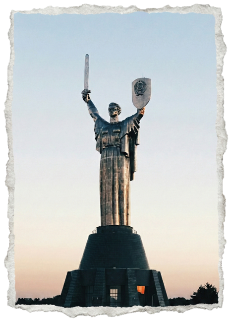

Economy
This conflict is near us, both from a geographical and economic point of view, and we know very well how
everything revolves around interests.
One of the main topics of discussion was not centered around the health and
welfare of the populations directly involved,
but around the possibility of a Russian block to our natural gas supply.
As war progressed, the EU had to reinvent its strategy in terms of importing the supplies, and it had to
readjust to new partners.
We take a look at how our dependency on Russian resources changed during the previous years.
